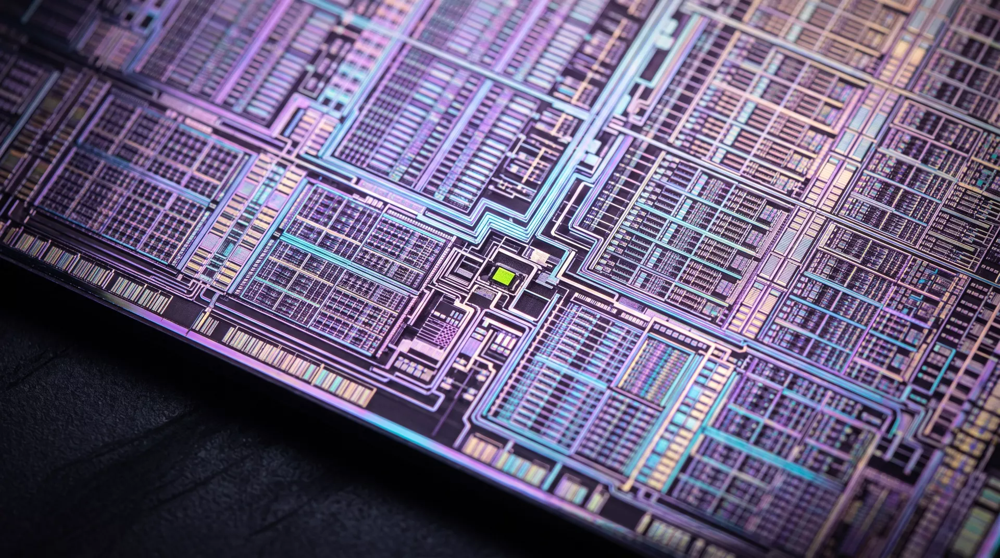

Five layers. One die. Scroll to close the stack — substrate first, heat spreader last. Then watch it run.
Every layer earns its altitude. Nothing on this die is decorative — if it doesn’t move a tensor or remove a watt, it didn’t tape out.
An organic interposer routing 9,216 signal paths and 350 W of supply without a single via it doesn’t need. Boring, by design. Boring is what reliability looks like.
Identical 4 nm tensor tiles, each with its own scheduler and clock island. A kernel maps the same way every time — profile once, ship forever.
A flat 2D mesh, one hop per neighbor, 2.1 TB/s bisection. No arbitration lottery, no NoC folklore — worst-case latency is a number we print, not a distribution we apologize for.
288 MB of on-die SRAM at 27 TB/s. For most production models, HBM is the fallback, not the plan. Cold reads are a scheduling bug.
A copper vapor chamber machined flat to 3 µm, mated dry — no paste, no pads, no thermal astrology. The die runs 11 °C cooler and the fan curve stays flat.

LLAMA-70B · FP4 · BATCH 1 · 30-MIN SUSTAINED · WALL POWER. NO CHERRY-PICKED KERNELS.
No graph compiler ritual, no six-hour calibration run. Attach, load, generate. The scheduler is static, so what you profile on Tuesday is what you ship on Friday.
import silica
chip = silica.attach("s1:0")
model = chip.load("llama-70b", quant="fp4")
for tok in model.stream("Hello, silicon."):
print(tok, end="", flush=True)
# 142 tok/s · 38 ms to first token · zero config